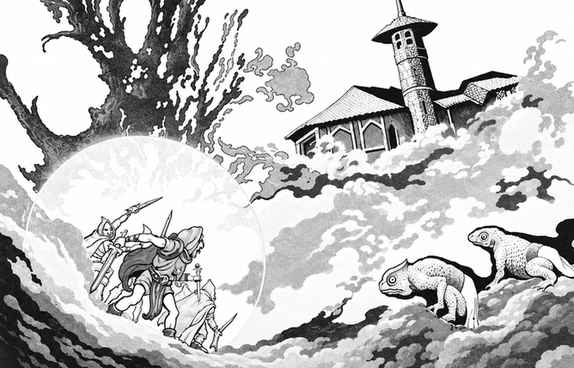

林勃 · Limbo
林勃是终极混沌的位面。它没有稳定的地面、天空或方向，空气、火、水、岩石、云和巨大的冰块不断混合。旅行者的意志可以塑造周围物质；有足够智力的人能够创造一个暂时安全区，使混沌保持可理解的形状。

没有思想的旅行者可能突然坠入岩石、淹没在水中、被火焰包围或失去空气。林勃中的安全区半径取决于智力；多名旅行者可以共同维持更大的区域，但意见冲突会使边界崩溃。林勃的法术持续时间、创造物和召唤物也可能随混沌改变。
林勃是萨拉德（slaad）和吉斯泽莱（githzerai）的主要领域。萨拉德把混沌视为自由，吉斯泽莱则在浮空城市和修道院中训练心灵，以抵抗位面本身。林勃的居民可能把旅行者当作实验对象、盟友或闯入者；外层位面的门户通常把来客送往盖勒斯尼姆、潘德莫尼姆或协调对立。